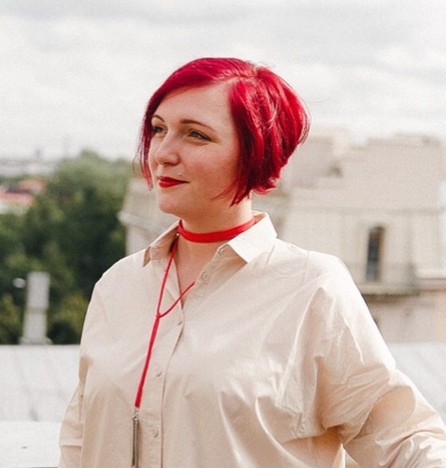

Гарольд, скрывающий боль

Алёна Батицкая, Frontend-разработчик
 Алёна Батицкая Frontend-разработчик
Frontend-разработчик, фрилансер со стажем
Всё рассказанное сегодня основано на опыте автора и не является истиной в последней инстанции.
ИМХО
10 000 ч. / (10 ч. * 6 д. * 4 нед. * 12 мес.) = 3,47 лет
чего ждать, а чего точно не ждать
На удалёнку почти никогда не берут джунов. Есть два пути:
STOP!
Требует большой концентрации, самомотивации, самоорганизации и любви 🖤
Фриланс точно такая же работа. Только в офисе вы выполняете исключительно свои обязанности, а на фрилансе должны уметь совмещать в себе обязанности сразу нескольких сотрудников.
только реальные цели
Ради чего вы работаете?
Чётко поставленная цель является офигенным мотиватором вставать с кровати каждое утро и работать изо всех сил. 🏃♂️
Ваша жизнь должна быть наполнена смыслом. Вы должны понимать, для чего всё это и почему нельзя забить, сбавить темп и опустить руки.
распорядок дня, список задач
Для меня важным оказалась организация временных рамок рабочего процесса. То есть, работать строго в определённое время, не бегая к компу для заказчика после 21:00.
Проблема удалёнки / фриланса в том, что вы не можете встать, выйти из офиса и забыть про работу до завтрашнего дня. Поэтому вам придётся самостоятельно разграничить рабочее время и время, уделяемое себе и семье.
Если вы не выстроите рабочий график сразу, то очень быстро почувствуете перекос в вашей жизни — вы будете забывать есть, домашние начнут обижаться на вас, друзья перестанут приглашать потусить. Потому что работы всегда много, всегда хватает интересных задач.
А ещё иногда случается состояние потока и всё, вы пропали для мира.
В организации домашней работы очень важную роль играет планирование.
Поскольку отсутствует «надзиратель» в виде шефа, стоящего над душой или менеджера, постоянно спрашивающего «Как дела?», вы сами отвечаете за соблюдение всех сроков на проекте.
Разбивайте крупную задачу на максимально мелкие.
Сверстать лендинг
Для меня важным хаком являются списки. Даже можно не составлять их заранее, для этого есть Трелло. А вот большие задачи разбивать прям по ходу на подзадачи удобно. Берёшь бумагу и ручку и записываешь первую пришедшую подзадачу в конец, выполненные вычеркиваешь. Ультрадробление!
Список должен быть обязательно составлен в порядке приоритетности — сначала то, что нужно сделать утром, затем не такое важное, в конце то, что было бы хорошо, но не стыдно перенести на следующий день. Только при переносе на следующий день у задачи повышается приоритет.
pomodoro-практика при многозадачности
Возможность быстро переключаться между задачами, уделяя им равное внимание на протяжении рабочего дня. При таком режиме работы выше концентрация, нет времени отвлекаться и залипать в соцсеточках.
Во время перерывов я встаю, хожу, разминаюсь и проветриваю кабинет.
Для ответов на почту или в мессенджерах, если это не касается работы, выделяю отдельный отрезок или делаю это во время длинного перерыва.
Если боитесь забыть, на чём остановились или какую-то важную мысль — оставляйте себе комментарии в коде или опять же записывайте на листочек.
не надо стесняться 😏
Деньги — основное топливо для вашей самомотивации. С их помощью достигается бОльшая часть целей.
Любая работа должна оплачиваться. Даже если вы согласились сделать сайт для знакомых или друзей. Оплата работы не позволяет вам схалявить и отложить проект в дальний ящик, а вашему заказчику — относиться к вашей работе наплевательски.
Интересное наблюдение: чем дешевле стоит работа, тем более проблемным окажется заказчик. Будьте к этому морально готовы. С этим ничего не поделать 🤷♀️
Вы великолепны! 😎
Поскольку я понимала, что в самом начале я буду делать простые вещи, то я снизила цену часа вдвое.
В самом начале работы я предупреждала заказчика, что будет долго, но для него довольно дёшево. Многие соглашались на такие условия.
Зная цену часа и сроки по проекту, вы можете посчитать его финальную стоимость.
Или сразу договоритесь с заказчиком на почасовую оплату. ⏰
Важный момент — всегда берите предоплату.
В интернете много гневных отзывов об исполнителях, которые сливаются в самый неподходящий момент.
Но, поверьте, у заказчиков тоже хватает причин вам не заплатить. Имея на руках предоплату, вы хоть немного перекроете то время, что потратили на проект, даже если вам не заплатят вторую часть.
Отдавайте исходники только после оплаты второй части. Это относится и к дизайнерам, и к разработчикам. У заказчика будет очень сильная мотивация заплатить вам все деньги.
Никогда не сливайтесь с проекта. 👎
Особенно если уже взяли предоплату. 👎👎👎
Это сильно скажется на вашей репутации, даже если вам так не кажется.
Сообщество дизайнеров, как и любое профессиональное сообщество, довольно тесное. Всегда помните о своём личном бренде, «блюдите честь смолоду».
не создавай себе лишних дедлайнов
Лафхак при оценке проекта: посчитайте, сколько вам реально нужно на его выполнение, заложите 10% на внезапные баги, а потом добавьте ещё 45% от получившейся цифры.
Будучи менеджером проектов, я всегда называла сроки, прибавляя именно столько к оценке, названной разработчиками.
Сделаете раньше — заказчик будет безмерно рад.
Сделаете в срок — никто не расстроится.
А вот если вы назовёте меньше, а потом профакапите — никто рад этому не будет. Все, и вы тоже, огребёте кучу негатива.
сон, спорт и семья
Если вы решили пойти по пути фриланса, то вы очень любите ту работу, которой занимаетесь. Гораздо проще было бы пойти в офис и заниматься ИБД — имитацией бурной деятельности — за фиксированную зп.
Поскольку все мы — люди творческих профессий, а, значит, легко увлекаемся. Я сама не раз обнаруживала себя в 2 часа ночи за монитором, жадно дописывающей не первую сотню строчек кода в порыве решения очень интересной задачки.
Такое увлечение работой и отсутствие меры быстро приведёт вас к эмоциональному выгоранию. Это полное пропадание интереса к работе, нежелание развиваться. Все задачи и проекты будут казаться скучными и унылыми. Работа перестанет приносить удовольствие. А поскольку зп не упадёт вам на карту 25го числа, вы вынуждены будете продолжать брать и выполнять заказы. Качество вашей работы ухудшится.
Если не проводить профилактику выгорания, то рано или поздно вы станете несчастным человеком, который занимается ненавистным делом. Круг замкнётся.
Даже если очень интересно и хочется — чередуйте задачи, чётко соблюдайте рабочие часы, уделяйте время себе и семье. Короче, неотступно придерживайтесь всего, что мы обговорили раньше.
Очень спасает интересное хобби. В летнее время я сразу после работы сажусь на велосипед. Нет физического доступа к компу — нет соблазна.
Обязательно попробуйте то, о чём всегда мечтали, но на это никогда не хватало времени.
дополнительный канал для поиска заказов
Кому принадлежат эти лозунги?
Перед началом вашей фриланс-карьеры проверьте свои страницы на наличие материалов, которые были бы неуместны для заказчика или которые характеризуют вас не так, как вы того хотели бы. Возможно, стоит создать доп.страницы с «деловым» контентом, которые будут быстро и легко находиться, а для вас - настоящих задать псевдонимы.
Выкладывайте на своих страницах ваши работы из портфолио. Постите интересные релевантные материалы. Пишите посты на свою тематику.
По возможности выступайте на местных митапах и конференциях. Чем больше людей будут знать о вас и ваших проектах — тем выше будет шанс получить заказ через сарафанное радио или найти хорошую работу.
Спасибо за внимание! Время задавать вопросы
Алёна Батицкая